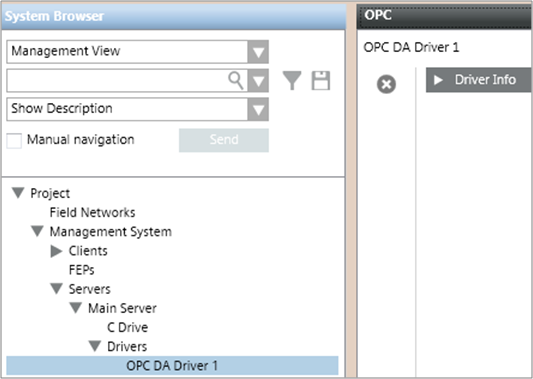

Create the OPC Driver
- Depending on where the driver will run, select one of the following:
- Project > Management System > Servers > Main Server > Drivers
- Project > Management System > FEPs > [FEP station] > [drivers folder]
NOTE: If the drivers folder is not available, to create it select the FEP station and click New .
. - In the Object Configurator tab, click New and select New OPC Client Driver.
- In the New object dialog box, enter a description and click OK.
- The newly created OPC driver is added to System Browser, but not started.
